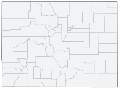

Historical county changes, 1790–1990 › Colorado

| Name↕ | Unit↕ | Existed↕ | FIPS↕ |
|---|---|---|---|
| Adams County | county | 1910–1990 | 08001 |
| Alamosa County | county | 1920–1990 | 08003 |
| Arapahoe County | county | 1870–1990 | 08005 |
| Archuleta County | county | 1890–1990 | 08007 |
| Baca County | county | 1890–1990 | 08009 |
| Bent County | county | 1870–1990 | 08011 |
| Boulder County | county | 1870–1990 | 08013 |
| Chaffee County | county | 1880–1990 | 08015 |
| Cheyenne County | county | 1890–1990 | 08017 |
| Clear Creek County | county | 1870–1990 | 08019 |
| Conejos County | county | 1870–1990 | 08021 |
| Costilla County | county | 1870–1990 | 08023 |
| Crowley County | county | 1920–1990 | 08025 |
| Custer County | county | 1880–1990 | 08027 |
| Delta County | county | 1890–1990 | 08029 |
| Denver County | county | 1910–1990 | 08031 |
| Dolores County | county | 1890–1990 | 08033 |
| Douglas County | county | 1870–1990 | 08035 |
| Eagle County | county | 1890–1990 | 08037 |
| El Paso County | county | 1870–1990 | 08041 |
| Elbert County | county | 1880–1990 | 08039 |
| Fremont County | county | 1870–1990 | 08043 |
| Garfield County | county | 1890–1990 | 08045 |
| Gilpin County | county | 1870–1990 | 08047 |
| Grand County | county | 1880–1990 | 08049 |
| Greenwood County | county | 1870 | 08049.1 |
| Gunnison County | county | 1880–1990 | 08051 |
| Hinsdale County | county | 1880–1990 | 08053 |
| Huerfano County | county | 1870–1990 | 08055 |
| Jackson County | county | 1910–1990 | 08057 |
| Jefferson County | county | 1870–1990 | 08059 |
| Kiowa County | county | 1890–1990 | 08061 |
| Kit Carson County | county | 1890–1990 | 08063 |
| La Plata County | county | 1880–1990 | 08067 |
| Lake County | county | 1870–1990 | 08065 |
| Larimer County | county | 1870–1990 | 08069 |
| Las Animas County | county | 1870–1990 | 08071 |
| Lincoln County | county | 1890–1990 | 08073 |
| Logan County | county | 1890–1990 | 08075 |
| Mesa County | county | 1890–1990 | 08077 |
| Mineral County | county | 1900–1990 | 08079 |
| Moffat County | county | 1920–1990 | 08081 |
| Montezuma County | county | 1890–1990 | 08083 |
| Montrose County | county | 1890–1990 | 08085 |
| Morgan County | county | 1890–1990 | 08087 |
| Otero County | county | 1890–1990 | 08089 |
| Ouray County | county | 1880–1990 | 08091 |
| Park | county | 1870–1990 | 08093 |
| Phillips County | county | 1890–1990 | 08095 |
| Pitkin County | county | 1890–1990 | 08097 |
| Prowers County | county | 1890–1990 | 08099 |
| Pueblo County | county | 1870–1990 | 08101 |
| Rio Blanco County | county | 1890–1990 | 08103 |
| Rio Grande County | county | 1880–1990 | 08105 |
| Routt County | county | 1880–1990 | 08105 |
| Saguache County | county | 1870–1990 | 08109 |
| San Juan County | county | 1880–1990 | 08111 |
| San Miguel County | county | 1890–1990 | 08113 |
| Sedgwick County | county | 1890–1990 | 08115 |
| Summit County | county | 1870–1990 | 08117 |
| Teller County | county | 1900–1990 | 08119 |
| Washington County | county | 1890–1990 | 08121 |
| Weld County | county | 1870–1990 | 08123 |
| Yuma County | county | 1890–1990 | 08125 |
Note: Decimals in FIPS codes come from Forstall, who gives every county a code, including counties that no longer exist. A county abolished between 1930 and 1990 keeps the code it had. However, a county which was abolished prior to 1930 never received a code. Such a county is given the code of the county which precedes it alphabetically plus a decimal to hold its place in the list.
Source: Richard L. Forstall (1996), Population of States and Counties of the United States: 1790 to 1990, U.S. Bureau of the Census (public domain). Always check a row against the scan it links to.